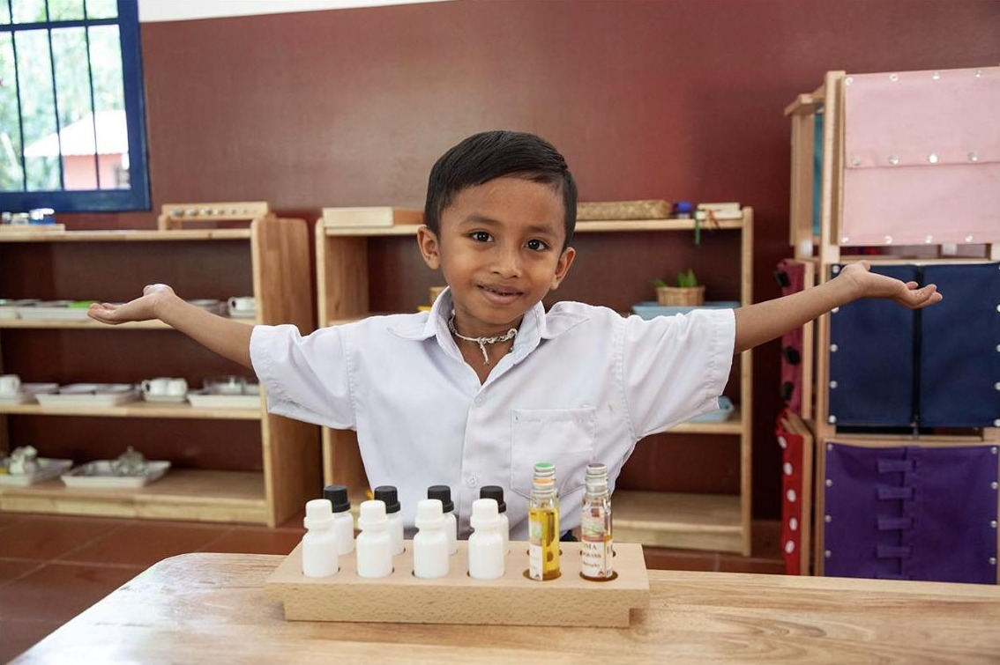

Báo cáo tác động thường niên 2025
Tháng 10, 2026

Entraide Asia được thành lập vào đầu năm 2025. Bản tóm tắt này nhìn lại năm đầu tiên: công việc bắt đầu ra sao, ở đâu, và đã giúp các trường đối tác làm được những gì.
Năm đầu tiên bắt đầu
Entraide Asia khởi đầu là nỗ lực nhỏ, độc lập của một nhóm bạn. Sau khi đến thăm Maison Chance ở TP. Hồ Chí Minh, họ quyết định giúp duy trì các lớp học cho trẻ em khuyết tật. Những tháng đầu tiên dành để lắng nghe các thầy cô và xây dựng niềm tin.
Mở rộng quan hệ đối tác
Giữa năm 2025, chúng tôi bắt đầu tài trợ học bổng và đồ dùng học tập tại Bayon School gần Siem Reap, Campuchia. Chúng tôi cũng bắt đầu hỗ trợ một trường cộng đồng nhỏ ở Thái Lan và đỡ đầu từng học sinh ở Myanmar, nơi cơ sở hạ tầng địa phương còn hạn chế.
Các đối tác làm gì với sự hỗ trợ này
Tại Bayon School, học bổng đồng hành cùng học sinh từ tiểu học đến đại học, kèm đồng phục, đồ dùng học tập, khám sức khỏe và trợ cấp hằng tháng cho gia đình. Tại Maison Chance, các trường tiểu học miễn học phí đón trẻ em khuyết tật và không khuyết tật. Vai trò của chúng tôi là hỗ trợ các đội ngũ địa phương này, không phải điều hành họ.
Bản tóm tắt tạm thời, dựa trên thông tin do các trường đối tác và Entraide Asia công bố.
năm thành lập Entraide Asia
trường học và chương trình đối tác
quốc gia: Việt Nam, Campuchia, Thái Lan, Myanmar